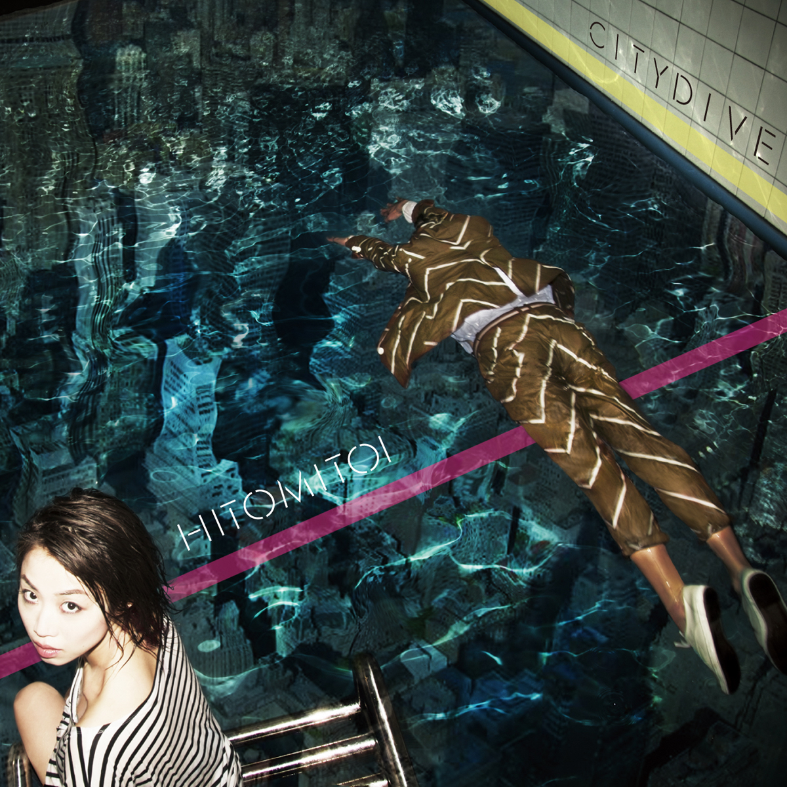

一十三十一 ◆ CITY DIVE ◆ 2012
不必多言，这张封面我也很喜欢www。一十三十一，本名天野一十三，从她主页的介绍来看，2002年出道，2012年这张专辑 CITY DIVE 成为话题作，是个慢热选手www。
听完 Tokyo Sniper 以后油管立刻给我推荐了这张，也是 Xerf Xpec 传的（谢谢你，XX老哥）。我搞了很久都没弄明白到底 Tokyo Sniper 的主唱和这张的是不是一个人🤔，听起来真的很像是同一个。这张专辑的风格跟 Tokyo Sniper 很像，曲风灵动，曲调优美，主唱声音独特，时不时有些有趣的独奏；我觉得比 Tokyo Sniper 更好听。
顺带一提，看看这满屏片假名，是人话吗？还コンセプチュアル，有够アーバン厚。
“媚薬系”とも評されるエアリーでコケティッシュなヴォーカルでアーバンなポップスを展開。……以降、立て続けにコンセプチュアルなオリジナルアルバムを発表。
评论有个老哥提到了些有用信息。Jul：
I advise you to look at Natsu Summer, a female singer who works with Cunimondo Takiguchi, the one who produced this City Dive and, if I’m not wrong, the mastermind of Ryusenkei.
Listen especially the last album of Natsu Summer “Hello, future day”, from 2017 (the third track, TA-RI-NA-I is a masterpiece). It is not available on YT, check on Spotify or Deezer.